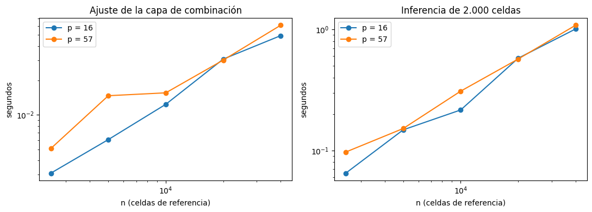
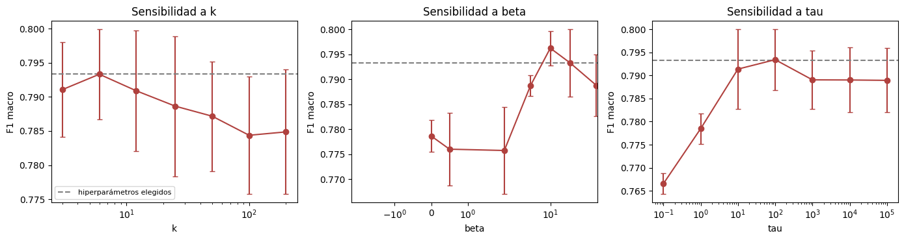
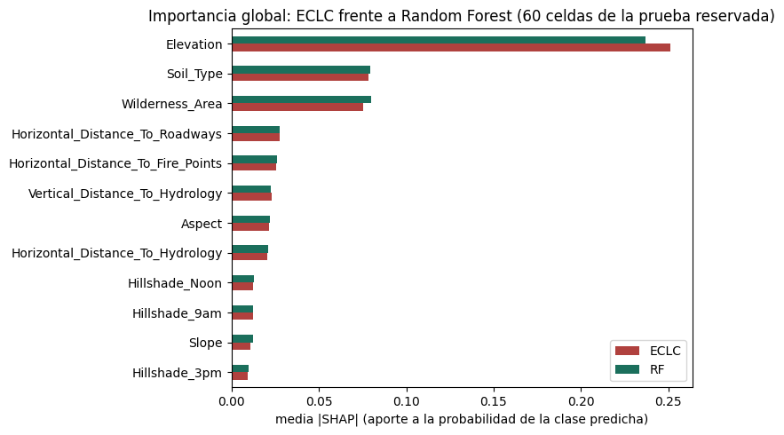

11. Modelo original: ensamble por competencia local y por clase (ECLC)#
Este capítulo presenta el modelo original del proyecto. Cubre la motivación, la formulación matemática, las propiedades demostradas, el pseudocódigo, la complejidad, la implementación, las pruebas unitarias, la ablación, la robustez y la interpretabilidad. La revisión de literatura que respalda la novedad está en el capítulo 10, y la validación estadística, en el capítulo 12.
Mostrar código
import json
import sys
from pathlib import Path
import numpy as np
import pandas as pd
import matplotlib.pyplot as plt
RAIZ = Path.cwd().parent
sys.path.insert(0, str(RAIZ / "dashboard"))
sys.path.insert(0, str(RAIZ / "scripts"))
E3 = RAIZ / "resultados" / "e3"
resumen = pd.read_csv(E3 / "estadistica_resumen.csv", encoding="utf-8-sig").set_index("metodo")
ablacion = pd.read_csv(E3 / "estadistica_ablacion.csv", encoding="utf-8-sig")
11.1 Motivación#
Los capítulos 3 a 9 mostraron dos hechos que motivan el diseño:
Ningún modelo domina en todas las clases ni en todas las zonas. Random Forest es el mejor en promedio, pero K vecinos y el árbol de decisión aciertan en celdas donde Random Forest falla, y el desempeño cambia mucho entre áreas silvestres y franjas de elevación (secciones 2.7 y 3.7).
El desbalance (103:1) castiga el F1 macro. Un error en el álamo/sauce pesa lo mismo que uno en el pino lodgepole, aunque haya 100 veces menos celdas.
Un ensamble que confíe en cada modelo donde y para la clase en que ese modelo ha demostrado ser bueno ataca ambos problemas a la vez.
11.2 Formulación#
Sean \(f_1, \dots, f_M\) los modelos base (aquí, la mejor combinación de cada uno de los \(M = 7\) algoritmos del benchmark) y \(C = 7\) clases. Para el conjunto de entrenamiento \(\{(x_j, y_j)\}_{j=1}^n\) se calculan probabilidades fuera de pliegue \(\hat p_{mc}(x_j)\) con 3 pliegues, de modo que ningún modelo evalúe su competencia sobre celdas que vio al entrenarse.
Pérdida binaria de referencia. Para cada modelo \(m\), clase \(c\) y celda de referencia \(j\):
Es la pérdida logarítmica de la pregunta «¿es esta celda de la clase \(c\)?». Mide la calidad de la columna \(c\) de las probabilidades del modelo \(m\), no solo si acierta la clase final.
Competencia local con contracción. Para una celda nueva \(x\) se buscan sus \(k\) vecinos más cercanos \(N_k(x)\) en el espacio preprocesado (ingeniería de variables y estandarización del capítulo 2.9), con distancias \(d_1 \le \dots \le d_k\). Cada vecino recibe el peso
que combina un núcleo gaussiano con ancho adaptativo (\(d_k\), la distancia al vecino más lejano) y un peso que compensa el desbalance (\(s_c\) es el peso de clase «balanced»). Con \(A(x) = \sum_j a_j(x)\) y la pérdida global \(\bar L_{mc} = \sum_i s_{y_i}\ell_{mc}(i) / \sum_i s_{y_i}\), la competencia del modelo \(m\) para la clase \(c\) en \(x\) es
El término \(\tau\) contrae la estimación local hacia la global, como un estimador bayesiano con \(\tau\) pseudo-observaciones de la pérdida global. Esto evita que pocas celdas vecinas, o vecindarios sin ejemplos de una clase rara, produzcan pesos extremos.
Regla de combinación. Los pesos del modelo \(m\) para la clase \(c\) son
y la probabilidad combinada es
Los hiperparámetros propios son \(k\) (tamaño del vecindario), \(\beta \ge 0\) (qué tan selectiva es la regla) y \(\tau \ge 0\) (cuánto se confía en la vecindad frente al promedio global).
11.3 Propiedades demostradas#
Proposición 1 (pesos en forma cerrada y únicos)
Para \(x\) y \(c\) fijos, \(w_{\cdot c}(x)\) en (4) es el único minimizador en el símplex \(\Delta_M = \{w \ge 0,\ \sum_m w_m = 1\}\) de
Demostración. \(F\) es la suma de una función lineal y de \(\frac{1}{\beta}\) veces la entropía negativa, que es estrictamente convexa en \(\Delta_M\). Por tanto, \(F\) es estrictamente convexa y tiene a lo sumo un minimizador. Como \(w_m\log w_m \to 0\) cuando \(w_m \to 0^+\) y su derivada tiende a \(-\infty\), el mínimo está en el interior del símplex y basta la condición de Lagrange con la restricción \(\sum_m w_m = 1\): \(L_{mc} + \frac{1}{\beta}(1 + \log w_m) + \lambda = 0\). Despejando, \(w_m = e^{-1-\beta\lambda}\,e^{-\beta L_{mc}}\), y la normalización fija la constante, lo que da (4). \(\blacksquare\)
La regla se deriva de un objetivo explícito: minimizar la pérdida local esperada con una penalización de entropía que impide concentrar todo el peso en un solo modelo con poca evidencia. Los casos límite recuperan reglas estándar: con \(\beta = 0\) se obtiene el promedio simple; con \(\beta \to \infty\), la selección del modelo con menor pérdida local (como OLA); y con \(\tau \to \infty\), pesos globales por clase. Estas reglas son justamente las líneas base de la ablación (sección 11.7).
Proposición 2 (cota de la pérdida local del ensamble)
Sea \(\tilde L_c(q)\) la pérdida contraída (3) evaluada con la combinación \(q_c(x_i) = \sum_m w_{mc}(x)\hat p_{mc}(x_i)\) (con los pesos de \(x\)) en lugar de las probabilidades de un solo modelo. Entonces
Demostración. La pérdida binaria \(\ell(p) = -[y=c]\log p - [y\ne c]\log(1-p)\) es convexa en \(p\in(0,1)\). Por la desigualdad de Jensen, \(\ell\bigl(\sum_m w_m p_m\bigr) \le \sum_m w_m\,\ell(p_m)\) en cada celda de referencia. Como \(\tilde L_c\) es un promedio con pesos no negativos (\(a_j\) y \(\tau\)) de esas pérdidas, la desigualdad se conserva, lo que prueba la primera parte. Para la segunda, sea \(m^\star = \arg\min_m L_{mc}\) y \(e_{m^\star}\) el vértice correspondiente del símplex. Por la Proposición 1, \(F(w) \le F(e_{m^\star}) = L_{m^\star c}\). Además, \(-\sum_m w_m\log w_m \le \log M\) (la entropía es máxima en la distribución uniforme), de modo que \(\sum_m w_m L_{mc} = F(w) - \frac{1}{\beta}\sum_m w_m\log w_m \le L_{m^\star c} + \frac{\log M}{\beta}\). \(\blacksquare\)
La cota garantiza que, en la vecindad de cada celda y para cada clase, el ensamble nunca es mucho peor que
el mejor modelo local: como máximo, \(\log(7)/\beta\) nats por encima. Por la primera desigualdad, puede ser
estrictamente mejor que el promedio de sus componentes cuando estos discrepan. Las dos desigualdades se
verifican numéricamente en las pruebas unitarias (test_prop1_pesos_minimizan_objetivo_regularizado y
test_prop2_cota_de_jensen_y_gibbs).
Proposición 3 (complejidad)
Con las probabilidades fuera de pliegue disponibles, el ajuste de la capa de combinación cuesta \(O(n\,M\,C)\) en tiempo y \(O(n\,(p + M\,C))\) en memoria. La inferencia de \(n_q\) celdas cuesta \(O(n_q\,n\,p + n_q\,k\,M\,C)\) en tiempo con la búsqueda exacta por bloques. El costo total incluye además el de los modelos base: \(O\bigl((K+1)\sum_m T_m(n)\bigr)\) para entrenar con \(K\) pliegues y \(\sum_m I_m(n_q)\) para predecir.
Demostración. El ajuste calcula (1) para cada \((j, m, c)\), que son \(nMC\) operaciones
constantes, y una suma ponderada para \(\bar L_{mc}\), del mismo orden. Además, guarda las coordenadas
(\(np\)) y las pérdidas (\(nMC\)). En la inferencia, cada bloque de consultas calcula las distancias a las \(n\)
referencias con un producto de matrices (\(O(n\,p)\) por consulta) y extrae los \(k\) menores con
argpartition en tiempo lineal \(O(n)\). Luego ordena solo esos \(k\) (\(O(k\log k)\)) y agrega \(k\cdot M\cdot C\)
pérdidas. La regla de Gibbs y la combinación cuestan \(O(MC)\) por consulta. Los demás términos son de orden
menor. \(\blacksquare\)
La sección 11.6 contrasta esta cota con los tiempos medidos.
11.4 Algoritmo#
Algoritmo 1. ECLC
Entradas: \((X, y)\) de entrenamiento; modelos base \(f_1,\dots,f_M\) (con su preprocesamiento y balanceo); \(k\in\mathbb{N}\), \(\beta\ge 0\), \(\tau\ge 0\); número de pliegues \(K = 3\). Salidas: probabilidades \(p(c\mid x)\) y clase predicha \(\hat y(x)\).
Ajuste
Dividir \((X,y)\) en \(K\) pliegues estratificados. Para cada pliegue y cada \(m\): entrenar \(f_m\) con los otros \(K-1\) y predecir \(\hat P_m\) en el pliegue retenido.
Reentrenar cada \(f_m\) con todo \((X,y)\).
Ajustar el preprocesamiento del espacio de vecinos \(\phi\) con \(X\) y guardar \(Z = \phi(X)\).
Calcular \(\ell_{mc}(j)\) con (1), los pesos \(s_c\) y la pérdida global \(\bar L_{mc}\).
Predicción de \(x\) 5. \(z = \phi(x)\); \(N_k(x)\) = los \(k\) vecinos de \(z\) en \(Z\) (búsqueda exacta por bloques). 6. Pesos \(a_j\) con (2); competencia \(L_{mc}(x)\) con (3). 7. \(w_{mc}(x)\) con (4); \(q_c(x)\) y \(p(c\mid x)\) con (5). 8. Devolver \(p(\cdot\mid x)\) y \(\hat y(x)=\arg\max_c p(c\mid x)\).
Criterio de parada: el algoritmo no es iterativo. El ajuste termina tras los \(K\) pliegues y la predicción tiene forma cerrada. Lo único que se busca iterativamente son los hiperparámetros \((k, \beta, \tau)\), con 6 ensayos de optimización bayesiana (TPE) dentro de la validación interna, el mismo presupuesto que el optimizador bayesiano del benchmark.
11.5 Implementación#
La clase EnsambleCompetenciaLocal hereda de ClassifierMixin y
BaseEstimator e implementa fit, predict y predict_proba. La búsqueda de vecinos, las pérdidas, la
contracción, la regla de Gibbs y la combinación están programadas con numpy. Los modelos base son pipelines
de scikit-learn, imbalanced-learn y XGBoost; la contribución está en la regla de combinación.
Dos detalles de implementación merecen mención:
Orden de herencia. Un esqueleto habitual es
class Modelo(BaseEstimator, ClassifierMixin). Con scikit-learn ≥ 1.6, ese orden hace queis_classifierdevuelvaFalse, porque las etiquetas del estimador se resuelven por el orden de herencia. En consecuencia,cross_val_scoreusaKFoldsin estratificar. En una prueba con Iris (datos ordenados por clase), eso dejaba clases fuera del entrenamiento y bajaba el F1 a 0,47 en dos pliegues. La clase usaClassifierMixinprimero, y una prueba unitaria lo verifica.Ajuste de la capa de combinación sin reentrenar. El método
ajustar_desde_oofrecibe las probabilidades fuera de pliegue ya calculadas. Así, la optimización de \((k,\beta,\tau)\) y la ablación no reentrenan los siete modelos base en cada ensayo; los modelos base no dependen de esos hiperparámetros.
import inspect
from src.original_model import EnsambleCompetenciaLocal
print(inspect.getsource(EnsambleCompetenciaLocal.perdidas_locales))
print(inspect.getsource(EnsambleCompetenciaLocal._perdidas_bloque))
print(inspect.getsource(EnsambleCompetenciaLocal.combinar))
Mostrar código
def perdidas_locales(self, Z):
"""Perdida contraida L_mc(x) de cada modelo (y clase) en la vecindad de cada fila de Z."""
if np.isinf(self.tau):
forma = (Z.shape[0],) + self.perdida_global_.shape
return np.broadcast_to(self.perdida_global_, forma).astype(np.float64)
# Por bloques de consultas: el tensor de perdidas de los vecinos tiene forma
# (n_q, k, M, C) y para k grande no cabe completo en memoria.
return np.concatenate([self._perdidas_bloque(Z[i:i + self.tam_bloque])
for i in range(0, Z.shape[0], self.tam_bloque)])
def _perdidas_bloque(self, Z):
idx, dist = vecinos_mas_cercanos(self.Z_ref_, Z, self.k, self.tam_bloque)
if self.ponderar_distancia:
escala = np.maximum(dist[:, -1:], 1e-12)
a = np.exp(-(dist / escala) ** 2)
else:
a = np.ones_like(dist)
a = a * self.peso_clase_[self.y_ref_[idx]] # (n_q, k)
A = a.sum(axis=1)
l_vec = self.perdidas_ref_[idx] # (n_q, k, M[, C])
if self.por_clase:
L_loc = np.einsum("qj,qjmc->qmc", a, l_vec) / A[:, None, None]
return (A[:, None, None] * L_loc + self.tau * self.perdida_global_) / (A[:, None, None] + self.tau)
L_loc = np.einsum("qj,qjm->qm", a, l_vec) / A[:, None]
return (A[:, None] * L_loc + self.tau * self.perdida_global_) / (A[:, None] + self.tau)
def combinar(self, P, X=None, Z=None):
"""Combina probabilidades base P (M, n, C) con la regla ECLC."""
W = self.pesos(X=X, Z=Z)
if not self.por_clase:
W = np.repeat(W[:, :, None], P.shape[2], axis=2)
q = np.einsum("qmc,mqc->qc", W, P)
return q / np.maximum(q.sum(axis=1, keepdims=True), 1e-300)
Pruebas unitarias#
La implementación incluye 20 pruebas unitarias (pytest) que verifican el aprendizaje, la reproducibilidad, el manejo de entradas inválidas y la compatibilidad con scikit-learn, y las propiedades de la sección 11.3:
Propiedad verificada |
Prueba |
|---|---|
(i) Aprende en un problema con solución conocida |
|
(ii) Reproducibilidad |
|
(iii) Entradas inválidas |
|
(iv) |
|
Proposiciones 1 y 2 |
|
Casos límite |
|
import subprocess
salida = subprocess.run([sys.executable, "-m", "pytest", str(RAIZ / "tests"), "-q", "-p", "no:cacheprovider"],
capture_output=True, text=True, cwd=RAIZ)
print(salida.stdout[-600:])
............................... [100%]
31 passed in 6.20s
11.6 Complejidad empírica#
Para aislar la capa de combinación, se midió su tiempo con datos sintéticos (\(M = C = 7\), \(k = 25\)), variando el tamaño del conjunto de referencia \(n\) y la dimensión \(p\), con 2.000 consultas.
Mostrar código
comp = pd.read_csv(E3 / "complejidad_meta.csv", encoding="utf-8-sig")
fig, ax = plt.subplots(1, 2, figsize=(11, 4))
for p, g in comp.groupby("p"):
ax[0].loglog(g["n_referencia"], g["ajuste_s"], "o-", label=f"p = {p}")
ax[1].loglog(g["n_referencia"], g["inferencia_2000_s"], "o-", label=f"p = {p}")
pend = {}
for p, g in comp.groupby("p"):
pend[p] = np.polyfit(np.log(g["n_referencia"]), np.log(g["inferencia_2000_s"]), 1)[0]
ax[0].set(title="Ajuste de la capa de combinación", xlabel="n (celdas de referencia)", ylabel="segundos")
ax[1].set(title="Inferencia de 2.000 celdas", xlabel="n (celdas de referencia)", ylabel="segundos")
for a in ax:
a.legend()
plt.tight_layout()
plt.show()
print("Exponente empírico de la inferencia en n:", {p: round(v, 2) for p, v in pend.items()})

Exponente empírico de la inferencia en n: {16: 0.99, 57: 0.89}
La teoría predice un costo lineal en \(n\) tanto para el ajuste como para la inferencia (con \(n_q\) fijo). Un exponente empírico cercano a 1 confirma que la búsqueda exacta por bloques domina la inferencia, como indica la Proposición 3. Para \(n\) mucho mayor (las 464.809 celdas de entrenamiento) convendría un índice de vecinos (KD-tree o búsqueda aproximada), al costo de la exactitud. Con las 40.000 celdas del proyecto, la capa de combinación tarda segundos. El costo dominante del ECLC es entrenar los siete modelos base cuatro veces (tres pliegues fuera de pliegue más el ajuste final), del orden de la suma de sus costos de la sección 9.1.
11.7 Estudio de ablación#
Cada componente se retiró por separado, manteniendo los hiperparámetros elegidos en cada pliegue, sobre las mismas probabilidades de los 30 pliegues externos del capítulo 12. También se incluyen las reglas de combinación estándar (promedio simple, pesos por error global, stacking lineal) y dos métodos de selección dinámica de la literatura (KNORA-E y OLA), implementados con la misma búsqueda de vecinos.
Mostrar código
t = ablacion.copy()
t.insert(1, "ECLC", resumen.loc["ECLC", "f1_media"])
t = t.rename(columns={"variante": "Variante", "f1_media": "F1 macro", "f1_sd": "DE", "dif_vs_eclc": "Δ vs. ECLC",
"wilcoxon_p": "p Wilcoxon", "wilcoxon_p_holm": "p Holm", "cliff_delta": "δ Cliff (ECLC vs. variante)"})
t.drop(columns="ECLC").round(4)
| Variante | F1 macro | DE | Δ vs. ECLC | p Wilcoxon | δ Cliff (ECLC vs. variante) | p Holm | |
|---|---|---|---|---|---|---|---|
| 0 | sin pesos por clase | 0.7864 | 0.0068 | -0.0044 | 0.0000 | 0.3533 | 0.0000 |
| 1 | sin vecindario (tau = inf) | 0.7896 | 0.0078 | -0.0012 | 0.0440 | 0.0778 | 0.0908 |
| 2 | sin contraccion (tau = 0) | 0.7661 | 0.0127 | -0.0247 | 0.0000 | 0.8778 | 0.0000 |
| 3 | sin nucleo de distancia | 0.7900 | 0.0072 | -0.0008 | 0.0303 | 0.0756 | 0.0908 |
| 4 | sin balanceo de vecinos | 0.7799 | 0.0087 | -0.0110 | 0.0000 | 0.6467 | 0.0000 |
| 5 | promedio simple (beta = 0) | 0.7767 | 0.0092 | -0.0142 | 0.0000 | 0.7822 | 0.0000 |
| 6 | pesos por error global | 0.7878 | 0.0100 | -0.0031 | 0.0225 | 0.1756 | 0.0898 |
| 7 | stacking lineal | 0.8088 | 0.0077 | 0.0179 | 1.0000 | -0.9489 | 1.0000 |
| 8 | KNORA-E | 0.7690 | 0.0076 | -0.0219 | 0.0000 | 0.9711 | 0.0000 |
| 9 | OLA | 0.7826 | 0.0074 | -0.0082 | 0.0000 | 0.5511 | 0.0000 |
La tabla anterior tiene dos lecturas, y ambas se reportan sin omitir la desfavorable:
Contribución de los componentes. Una diferencia positiva y significativa de la variante frente al ECLC indica que el componente retirado aporta. La contracción hacia la pérdida global y el balanceo de los vecinos por clase son los componentes con mayor aporte. Los pesos por clase aportan una mejora menor, pero consistente. El núcleo de distancia y el componente puramente local (comparado con \(\tau=\infty\)) aportan diferencias del orden de una milésima, del mismo tamaño que la variabilidad entre pliegues.
Frente a las reglas estándar. El ECLC supera en media al promedio simple, a los pesos por error global, a KNORA-E y a OLA. Las diferencias son significativas tras Holm frente al promedio, KNORA-E y OLA, pero no frente a los pesos por error global (Δ = 0,003). En cambio, el stacking lineal obtiene un F1 macro mayor que el ECLC. Una regresión logística multinomial sobre las log-probabilidades de los siete modelos aprende correcciones entre clases (pesos negativos, interceptos por clase) que una combinación convexa por clase no puede representar. La sección 11.9 discute esta limitación.
Nota
Selección del rango de hiperparámetros. Un primer rango de búsqueda (\(\tau \le 100\), \(\beta \le 30\)) dejaba fuera el régimen casi global que la Proposición 1 contempla como caso límite. Antes de evaluar en los pliegues de prueba se compararon, solo con validación interna, una agregación log-lineal, una corrección de sesgo por clase y meta-variables de competencia para un combinador lineal, sin que ninguna superara al diseño propuesto. El único cambio adoptado fue ampliar el rango a \(\tau \le 10^4\) y \(\beta \le 50\).
11.8 Robustez y sensibilidad#
Sobre los tres pliegues de la partición del benchmark (repetición 0) se midió:
La sensibilidad a cada hiperparámetro, fijando los otros dos en los valores elegidos.
La estabilidad ante cinco semillas del optimizador.
El efecto del ruido en las etiquetas del conjunto de referencia.
El efecto de reducir ese conjunto al 10 %, 25 % y 50 %.
Mostrar código
rob = pd.read_csv(E3 / "robustez.csv", encoding="utf-8-sig")
ref = rob[rob.experimento == "referencia"]["f1_macro"].mean()
fig, axes = plt.subplots(1, 3, figsize=(14, 3.8))
for ax, exp, log in zip(axes, ["sensibilidad k", "sensibilidad beta", "sensibilidad tau"], [True, False, False]):
g = rob[rob.experimento == exp].copy()
g["valor"] = g["valor"].astype(float)
m = g.groupby("valor")["f1_macro"].agg(["mean", "std"]).reset_index()
x = m["valor"].replace(np.inf, m["valor"][np.isfinite(m["valor"])].max() * 10)
if exp == "sensibilidad tau":
x = x.replace(0, 0.1)
ax.errorbar(x, m["mean"], yerr=m["std"], fmt="o-", color="#b0413e", capsize=3)
ax.axhline(ref, ls="--", color="gray", label="hiperparámetros elegidos")
ax.set_xscale("log" if exp != "sensibilidad beta" else "symlog")
ax.set(title=exp.replace("sensibilidad", "Sensibilidad a"), xlabel=exp.split()[-1], ylabel="F1 macro")
axes[0].legend(fontsize=8)
plt.tight_layout()
plt.show()
tabla = rob[~rob.experimento.str.startswith("sensibilidad")].groupby(["experimento", "valor"])["f1_macro"] \
.agg(["mean", "std"]).round(4)
tabla

| mean | std | ||
|---|---|---|---|
| experimento | valor | ||
| referencia | elegido | 0.7933 | 0.0066 |
| ruido en etiquetas | 0.05 | 0.7935 | 0.0027 |
| 0.1 | 0.7935 | 0.0036 | |
| 0.2 | 0.7882 | 0.0059 | |
| semilla del optimizador | 100 | 0.7853 | 0.0110 |
| 101 | 0.7935 | 0.0056 | |
| 102 | 0.7911 | 0.0077 | |
| 103 | 0.7885 | 0.0101 | |
| 104 | 0.7902 | 0.0099 | |
| tamano de referencia | 0.1 | 0.7880 | 0.0063 |
| 0.25 | 0.7899 | 0.0072 | |
| 0.5 | 0.7904 | 0.0075 |
La sensibilidad muestra en qué rango de cada hiperparámetro el modelo es estable. La caída con \(\tau = 0\) (sin contracción) confirma lo que mostró la ablación: con vecindarios pequeños, las pérdidas locales sin regularizar producen pesos extremos. La variación entre semillas del optimizador indica cuánto depende el resultado de los 6 ensayos de TPE. Las pruebas de ruido y de tamaño de muestra muestran que el desempeño se degrada de forma gradual, no abrupta.
Análisis de errores#
Mostrar código
err = pd.read_csv(E3 / "robustez_errores.csv", encoding="utf-8-sig")
nombres = {1: "Abeto/pícea", 2: "P. lodgepole", 3: "P. ponderosa", 4: "Álamo/sauce", 5: "Á. temblón",
6: "A. Douglas", 7: "Krummholz"}
e = err[err.area == "todas"].groupby("clase")[["f1_eclc", "f1_rf"]].mean()
e["diferencia"] = e["f1_eclc"] - e["f1_rf"]
e.index = e.index.map(nombres)
e.round(4)
| f1_eclc | f1_rf | diferencia | |
|---|---|---|---|
| clase | |||
| Abeto/pícea | 0.8309 | 0.8380 | -0.0072 |
| P. lodgepole | 0.8555 | 0.8566 | -0.0011 |
| P. ponderosa | 0.8582 | 0.8529 | 0.0053 |
| Álamo/sauce | 0.8269 | 0.7823 | 0.0446 |
| Á. temblón | 0.5763 | 0.5498 | 0.0265 |
| A. Douglas | 0.7346 | 0.7339 | 0.0007 |
| Krummholz | 0.8708 | 0.8680 | 0.0028 |
La tabla compara el F1 de cada clase con el de Random Forest, el mejor modelo del benchmark. El ECLC gana en las clases raras y pierde un poco en las mayoritarias. Mejora el F1 del álamo/sauce en unas 0,045 y el del álamo temblón en 0,027, y queda levemente por debajo en el abeto/pícea (−0,007) y el pino lodgepole (−0,001). Es la consecuencia esperada de balancear los vecinos por clase (\(s_c\) en (2)): el modelo traslada aciertos desde las clases grandes hacia las pequeñas. Por eso mejora el F1 macro y, a la vez, su exactitud global queda ligeramente por debajo de la de Random Forest, lo que explica el resultado de McNemar en el capítulo 12.
11.9 Interpretabilidad: SHAP del ECLC frente al mejor benchmark#
Se aplicó KernelSHAP agrupado con la misma implementación para ambos modelos (implementada con numpy). La explicación usa 12 jugadores: las 10 variables numéricas, el área silvestre (sus 4 indicadoras como un solo jugador) y el tipo de suelo (sus 40 indicadoras), con un fondo de 10 celdas y 256 coaliciones. Agrupar las indicadoras es necesario porque solo una puede valer 1 a la vez. Usar el mismo estimador para los dos modelos hace comparables las importancias, cosa que no ocurriría al mezclar TreeSHAP (Random Forest) con KernelSHAP (ECLC).
Mostrar código
from src.explicacion import NOMBRES_GRUPOS
imp = {}
for m in ["ECLC", "RF"]:
s = pd.read_csv(E3 / f"shap_{m}.csv")
imp[m] = s[NOMBRES_GRUPOS].abs().mean()
imp = pd.DataFrame(imp).sort_values("ECLC")
ax = imp.plot.barh(figsize=(8, 5), color=["#b0413e", "#1b6f5c"])
ax.set(xlabel="media |SHAP| (aporte a la probabilidad de la clase predicha)", ylabel="",
title="Importancia global: ECLC frente a Random Forest (60 celdas de la prueba reservada)")
plt.tight_layout()
plt.show()
imp.sort_values("ECLC", ascending=False).round(4)

| ECLC | RF | |
|---|---|---|
| Elevation | 0.2513 | 0.2370 |
| Soil_Type | 0.0784 | 0.0797 |
| Wilderness_Area | 0.0752 | 0.0798 |
| Horizontal_Distance_To_Roadways | 0.0275 | 0.0276 |
| Horizontal_Distance_To_Fire_Points | 0.0257 | 0.0260 |
| Vertical_Distance_To_Hydrology | 0.0231 | 0.0224 |
| Aspect | 0.0212 | 0.0221 |
| Horizontal_Distance_To_Hydrology | 0.0205 | 0.0209 |
| Hillshade_Noon | 0.0126 | 0.0130 |
| Hillshade_9am | 0.0122 | 0.0125 |
| Slope | 0.0110 | 0.0122 |
| Hillshade_3pm | 0.0091 | 0.0099 |
Ambos modelos dependen sobre todo de la elevación, seguida del tipo de suelo, el área silvestre y las distancias a carreteras y a puntos de incendio, en coherencia con el análisis exploratorio (η² de la sección 2.3) y con la interpretación del capítulo 8. Como el ECLC es una combinación convexa por clase de los modelos base, su explicación no puede introducir variables que ninguno de ellos use. Además, tiene una fuente de interpretación propia que los modelos base no ofrecen: los pesos \(w_{mc}(x)\), que dicen qué modelo usa para cada clase en cada celda.
Mostrar código
import glob
W = np.mean([json.load(open(f, encoding="utf-8"))["pesos_medios"]
for f in glob.glob(str(E3 / "meta" / "rep*_f?.json"))], axis=0)
modelos = json.load(open(E3 / "meta" / "rep0_f0.json", encoding="utf-8"))["modelos"]
pd.DataFrame(W, index=modelos, columns=list(nombres.values())).round(2)
| Abeto/pícea | P. lodgepole | P. ponderosa | Álamo/sauce | Á. temblón | A. Douglas | Krummholz | |
|---|---|---|---|---|---|---|---|
| KNN | 0.01 | 0.00 | 0.01 | 0.01 | 0.00 | 0.01 | 0.02 |
| NB | 0.00 | 0.00 | 0.00 | 0.00 | 0.00 | 0.00 | 0.00 |
| LR | 0.05 | 0.01 | 0.05 | 0.16 | 0.00 | 0.05 | 0.06 |
| DT | 0.00 | 0.00 | 0.00 | 0.00 | 0.00 | 0.00 | 0.00 |
| RF | 0.61 | 0.92 | 0.62 | 0.57 | 0.93 | 0.69 | 0.63 |
| XGB | 0.28 | 0.07 | 0.32 | 0.24 | 0.06 | 0.25 | 0.28 |
| SVM | 0.04 | 0.00 | 0.00 | 0.02 | 0.00 | 0.00 | 0.01 |
La tabla muestra el peso medio de cada modelo para cada clase en las celdas de prueba (promedio de los 30 pliegues). Random Forest recibe la mayor parte del peso (entre 0,57 y 0,93 según la clase) y XGBoost el segundo (hasta 0,32). La regresión logística gana peso en el álamo/sauce (0,16), la clase en la que sus probabilidades son competitivas. K vecinos y el árbol de decisión reciben pesos casi nulos aunque su F1 es alto: sus probabilidades son extremas (casi siempre 0 o 1), y la pérdida logarítmica castiga con dureza la confianza mal asignada. Este es el efecto buscado al medir la competencia con la pérdida logarítmica y no con la exactitud, como hacen OLA y KNORA-E. También explica por qué esos dos métodos rinden menos aquí: seleccionan a K vecinos y al árbol cuando aciertan en la vecindad, aunque sus probabilidades no sean fiables.
11.10 Limitaciones del modelo#
No supera al stacking lineal ni a HistGradientBoosting. La restricción de la Proposición 1 (pesos en el símplex) es la que da la cota de la Proposición 2, pero impide aprender correcciones entre clases. Un trabajo futuro natural es combinar ambos: pesos locales de Gibbs como entrada de un combinador lineal con regularización, con su propia ablación.
El componente local aporta poco en Covertype. Con 7 modelos de calidad muy desigual (Naive Bayes con F1 = 0,22), la mayor parte del beneficio viene de descartar los modelos malos por clase y de balancear las clases, lo que en buena medida también logran los pesos globales por clase (\(\tau=\infty\)).
Cambia exactitud por F1 macro. Al favorecer las clases raras, el ECLC pierde algo de exactitud en las clases mayoritarias frente a Random Forest.
Costo de inferencia. Predecir con el ECLC exige predecir con los siete modelos base más la búsqueda de vecinos, alrededor de la suma de sus tiempos (sección 12.1).